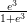
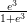
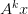
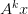
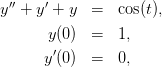
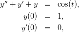

4.7 Método da potência para cálculo de autovalores
Consideremos uma matriz  diagonalizável, isto é, existe um conjunto
 de autovetores de
diagonalizável, isto é, existe um conjunto
 de autovetores de  tais que qualquer elemento
tais que qualquer elemento  pode ser
escrito como uma combinação linear dos
pode ser
escrito como uma combinação linear dos  . Sejam
. Sejam  o conjunto de
autovalores associados aos autovetores tal que um deles seja dominante, ou
seja,
o conjunto de
autovalores associados aos autovetores tal que um deles seja dominante, ou
seja,

 ,
,  , pode ser
escrito com combinação linear dos autovetores da seguinte forma:
, pode ser
escrito com combinação linear dos autovetores da seguinte forma:
 | (4.26) |
O método da potência permite o cálculo do autovetor dominante com base no comportamento assintótico (i.e. "no infinito") da sequência

Por questões de convergência, consideramos a seguinte sequência semelhante à anterior, porém normalizada:


 está na forma (4.26), então  pode ser escrito
como
está na forma (4.26), então  pode ser escrito
como

 para todo , temos
para todo , temos

 | (4.27) |
Como a norma de  é igual a um, temos
é igual a um, temos


 , então
, então


Observe que um múltiplo de autovetor também é um autovetor e, portanto,

Uma vez que temos o autovetor  de
de  , podemos calcular
, podemos calcular  da seguinte
forma:
da seguinte
forma:

 por construção.
por construção.